Introduction
Ce rapport accompagne le relevé d'audit effectué sur le site « Association d'Assurance Accident » (AAA).
La méthodologie d'audit employée repose sur le référentiel RGAA 4.1, consultable à l'adresse suivante : https://accessibilite.public.lu/fr/rgaa4.1/criteres.html
L'audit a été réalisé au moyen de l'utilisation de navigateurs web et d'outils spécialisés. Des tests de restitution ont également été effectués conformément à la base de référence définie par le RGAA 4.1.
Échantillon
L'audit a porté sur un échantillon de 15 pages pour le niveau double A (AA) :
| Nº page | Titre de la page | URL |
|---|---|---|
| P01 | Accueil | https://aaa.public.lu/fr.html |
| P02 | Contact | https://aaa.public.lu/fr/support/contact.html |
| P03 | Mentions légales | https://aaa.public.lu/fr/support/aspects-legaux/mention-legales.html |
| P04 | Accessibilité | https://aaa.public.lu/fr/support/accessibilite.html |
| P05 | Plan du site | https://aaa.public.lu/fr/support/plan.html |
| P06 | Résultats de recherche | https://aaa.public.lu/fr/support/recherche.html?q=accident |
| P07 | Vision | https://aaa.public.lu/fr/aaa/vision.html |
| P08 | Missions | https://aaa.public.lu/fr/aaa/missions.html |
| P09 | Organisation | https://aaa.public.lu/fr/aaa/organisation.html |
| P10 | Formation | https://aaa.public.lu/fr/securite-sante-travail/formations/securite-recommandations-prevention/conduite-engins-en-securite/conducteurs-engins.html |
| P11 | Maladies professionnelles | https://aaa.public.lu/fr/accidents-maladie-pro/maladies-professionnelles/provoquees-par-agents-chimiques.html |
| P12 | Publications | https://aaa.public.lu/fr/documentation/publications.html |
| P13 | Guide pratique | https://aaa.public.lu/fr/documentation/publications/guides/GuideCSL.html |
| P14 | Photo SST 2019 | https://aaa.public.lu/fr/documentation/photos-videos/photos/forum-securite-sante/Forum-sst-2019.html |
| P15 | Vidéo Josy - victime d'un AT | https://aaa.public.lu/fr/documentation/photos-videos/videos/campagne-vision-zero/josy-accident-travail.html |
Environnement de test (base de référence)
Quelques critères RGAA, notamment ceux de la thématique JavaScript, incluent des tests de restitution à effectuer sur des technologies d'assistance associées à des navigateurs et des systèmes d'exploitation. Pour qu'un dispositif HTML / WAI-ARIA ou son alternative soit considéré comme compatible avec l'accessibilité, il faut qu'il soit pleinement fonctionnel, en termes de restitution et de fonctionnalités sur certaines combinaisons. Vous trouverez une explication détaillée de cet environnement de tests dans le document du RGAA 4.1.
Nous détaillons ci-dessous la base de référence utilisée pour réaliser les tests de restitution des composants du site.
Environnement de test – ordinateur
| Technologie d'assistance | Navigateur |
|---|---|
| NVDA 2021.4 | Firefox 102 |
| JAWS 2021 | Firefox 102 |
| VoiceOver | Safari 15.5 |
Environnement de test — mobile
| Système d'exploitation | Technologie d'assistance | Navigateur |
|---|---|---|
| Android 12 | TalkBack (dernière version) | Chrome 103 |
Accessibilité des pages auditées
Le site présente un niveau général d'accessibilité moyen.
Le niveau moyen de conformité relevé atteint 59,42 % de conformité sur l'ensemble des pages auditées, avec 56,60 % de conformité au niveau simple A (A) et 59,42 % de conformité au niveau double A (AA).
Le site est partiellement conforme.
Conformité RGAA 4.1 du site
| Conforme | Non conforme | |
|---|---|---|
| A | 56,60% | 43,40% |
| AA (légal) | 59,42% | 40,58% |
Note sur le calcul de conformité
La conformité globale (Tableau « Conformité RGAA 4.1 ») est calculée de la manière suivante : C / (C+NC). C est le nombre de critères conformes et NC le nombre de critères non conformes.
C'est ce nombre qui constitue la référence légale. Il représente le taux de conformité de l'échantillon.
Il est normal que le taux de conformité global diffère sensiblement du taux de conformité par page. En effet, un critère NC (non conforme) sur une page rend le critère non conforme sur l'ensemble de l'échantillon.
Pour qu'un site soit conforme (100 % des critères applicables sont conformes au niveau AA), il est nécessaire que le taux de conformité par page équivaille à 100 %.
Conformité pour chaque niveau
| Conforme | Non conforme | |
|---|---|---|
| A | 56,60% | 43,40% |
| AA | 68,75% | 31,25% |
Moyenne par pages
| Nº page | Titre de la page | %C |
|---|---|---|
| P01 | Accueil | 75,00% |
| P02 | Contact | 75,51% |
| P03 | Mentions légales | 100,00% |
| P04 | Accessibilité | 97,14% |
| P05 | Plan du site | 100,00% |
| P06 | Résultats de recherche | 87,50% |
| P07 | Vision | 94,44% |
| P08 | Missions | 100,00% |
| P09 | Organisation | 97,14% |
| P10 | Formation | 85,00% |
| P11 | Maladies professionnelles | 91,18% |
| P12 | Publications | 86,84% |
| P13 | Guide pratique | 92,31% |
| P14 | Photo SST 2019 | 100,00% |
| P15 | Vidéo Josy - victime d'un AT | 91,11% |
Moyenne par thématiques
| Thématiques | C | NC |
|---|---|---|
| Images | 50,00% | 50,00% |
| Cadres | 0,00% | 100,00% |
| Couleurs | 0,00% | 100,00% |
| Multimédia | 66,67% | 33,33% |
| Tableaux | 0,00% | 100,00% |
| Liens | 50,00% | 50,00% |
| Script | 50,00% | 50,00% |
| Eléments obligatoires | 77,78% | 22,22% |
| Structuration | 66,67% | 33,33% |
| Présentation | 58,33% | 41,67% |
| Formulaires | 55,56% | 44,44% |
| Navigation | 80,89% | 11,11% |
| Consultation | 66,67% | 33,33% |
Impacts utilisateurs
Les principales personnes impactées sont les personnes aveugles et celles qui naviguent au clavier. Les problèmes liés aux scripts, à l'API ARIA et aux formulaires rendent parfois difficile l'utilisation du site par ces utilisateurs.
Contenus dérogés
La dérogation est un moyen d'exclure du champ d'application du référentiel des contenus particuliers. Les cas de dérogations sont très encadrés, vous en trouverez le détail dans le guide des dérogations.
Les contenus suivants n'entrent pas dans le calcul de la conformité ni dans le périmètre des éléments à rendre accessibles, ils sont dérogés :
- Les sous-menus de la navigation principale ne sont pas accessibles au clavier, néanmoins l'accès à ces pages est possible depuis les pages du premier niveau de navigation et depuis le pied de page.
- Le carrousel de la page d'accueil n'est pas accessible, le contenu de ce carrousel est accessible par le lien en dessous du composant et/ou la rubrique « actualité » disponible en bas de page.
- Le carrousel de la page « Photo SST 2019 » n'est pas accessible, son contenu est décoratif.
Droit à la compensation
Les dérogations émises notamment pour charge disproportionnée demandent en contrepartie la mise en place d'un moyen de compensation pour les utilisateurs. Pour les documents bureautiques par exemple, vous devez fournir un moyen à l'utilisateur de demander une version accessible d'un document s'il en a besoin. Cela peut être un mail ou un formulaire de contact.
Note sur le relevé des non-conformités
Ne sont cités dans ce rapport que quelques exemples issus du relevé des non-conformités.
De plus, toutes les occurrences d'une non-conformité ne sont pas listées dans le relevé. Par exemple : « Les liens en bleu clair sur bleu (exemple « AAA », « Sécurité / Santé au travail », ...) ont un contraste de 4.25 au lieu de 4.5 », le relevé mentionne quelques occurrences, mais ne les cite pas tous.
Avis
Le site Association d'Assurance Accident (AAA) a un niveau moyen d'accessibilité, la diversité de ses contenus (images complexes, vidéos, tableaux...) nécessite la mise en place d'une alternative spécifique. Même si le taux global révèle un statut partiellement conforme, nous notons certaines bonnes pratiques et des efforts pour la prise en compte de l'accessibilité. Nous n'avons pas relevé de non-conformité dont la correction nous semble impossible, sous réserve des contraintes techniques.
Les non-conformités les plus bloquantes pour les utilisateurs concernent :
- Les formulaires
- Les tableaux de données
- Les médias.
- Les scripts
Ce sont donc ces points qui devront nécessiter une attention toute particulière et qui demanderont le plus d'efforts.
Annexe technique
Images
Recommandation
Donner à chaque image porteuse d'information une alternative textuelle pertinente et une description détaillée si nécessaire. Lier les légendes à leurs images. Remplacer les images textes par du texte stylé lorsque c'est possible.
Images de décoration
Le site contient des images de décoration qui ne sont pas correctement identifiées, soit parce qu'elles ont une alternative renseignée, soit parce qu'il manque les attributs nécessaires pour qu'elles soient ignorées par les technologies d'assistance.
Ces images n'apportent aucune information et peuvent causer des problèmes de compréhension pour les aveugles et les grands malvoyants qui vont écouter les contenus avec un lecteur d'écran.
- Dans le cas d'une image insérée avec la balise
img, mettre unalt="". - Dans le cas d'une image insérée avec la balise
svg, mettre une propriété ARIAaria-hidden="true".
Constats sur le site
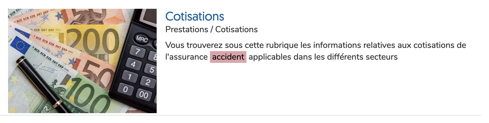Sur la page de résultats de recherche, les vignettes des résultats n'ont pas d'attribut alt.
Images légendées
On trouve un certain nombre d'images avec des informations de copyright sur le site. Actuellement, une personne aveugle ne peut savoir à quel contenu s'applique le copyright.
Il va falloir relier l'image et l'information de copyright en utilisant l'implémentation suivante :
<figure role="group" aria-label="Document 1 - Le présent registre contenant six feuillets…">
<img src="path/to/img/jpg" alt="Document 1" />
<figcaption>
Document 1 — Le présent registre contenant six feuillets…</figcaption>
</figure>Le contenu de l'attribut alt de l'image sert ici à labelliser l'image pour la relier à sa légende, permettant aux personnes aveugles utilisant un lecteur d'écran de faire le lien entre l'image et le texte qui l'accompagne. La propriété aria-label doit reprendre le contenu exact contenu dans l'élément figcaption.
Constats sur le site
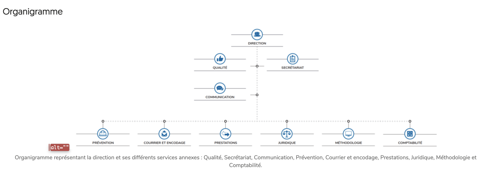Sur la page « Organisation », l'image de l'organigramme est correctement reliée à sa légende, son alternative est absente : (alt="").
Cadres
L'absence d'identification des cadres peut poser un problème de repérage dans la structure de la page ou de compréhension des contenus pour les personnes aveugles.
Constats sur le site
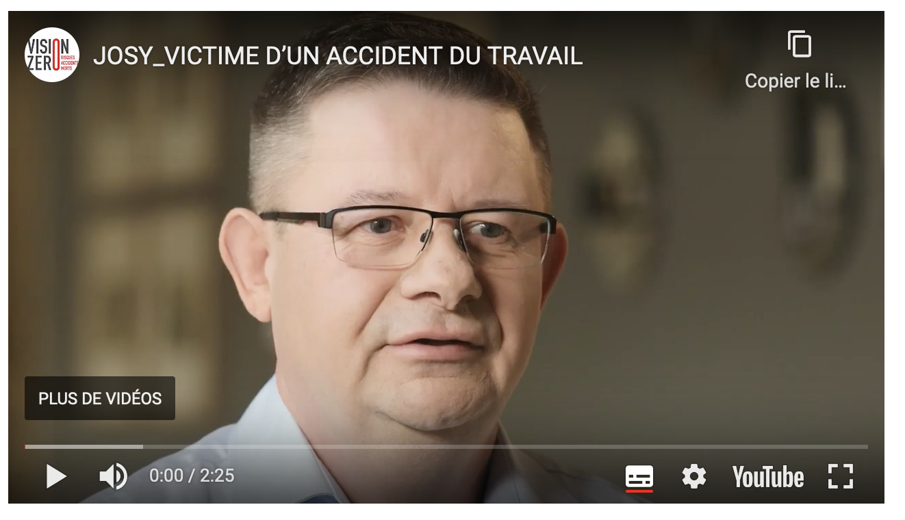Sur la page « Vidéo Josy - victime d'un AT », les balises <iframe> du lecteur YouTube n'ont pas de titre.
Couleurs
Recommandation
Ne pas donner l'information uniquement par la couleur et utiliser des contrastes de couleurs suffisamment élevés pour les textes et les composants d'interface.
Contrastes des textes
Plusieurs couleurs présentent un rapport de contraste insuffisant, ce qui peut poser problème aux personnes déficientes visuelles qui ont des difficultés à percevoir les couleurs ou les contrastes.
Rapports de contrastes définis par le RGAA
- Pour les textes qui ont une taille de police calculée inférieure à 24px sans effet de graisse ou une taille de police calculée inférieure à 18,5px avec effet de graisse, le rapport de contraste entre la couleur du texte (y compris le texte en image) et son arrière-plan doit être de 4.5:1, au moins.
- Pour les textes qui ont une taille de police calculée supérieure ou égale à 24px sans effet de graisse ou une taille de police calculée supérieure ou égale à 18,5px avec effet de graisse, le rapport de contraste entre la couleur du texte (y compris le texte en image) et son arrière-plan doit être de 3:1, au moins.
Vous pouvez foncer les couleurs pour obtenir le rapport de contraste exigé.
Si la charte graphique ne peut être modifiée, fournissez une méthode aux utilisateurs pour consulter le site avec des contrastes suffisants. Ceci peut être réalisé simplement avec une fonctionnalité JavaScript et une surcharge CSS des couleurs.
Vous pouvez voir un exemple de ce type de mécanisme sur le site sncf.com. Dans les réglages d'accessibilité, vous trouverez une option qui permet d'afficher le site avec des contrastes renforcés et inversés.
Constats sur le site
-
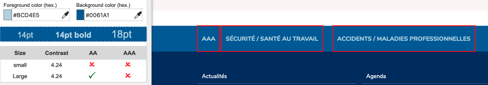
Les liens en bleu clair sur bleu (exemple « AAA », « Sécurité / Santé au travail », ...) ont un contraste de 4.25 au lieu de 4.5.
-
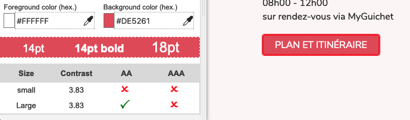
Le lien « plan et itinéraire », en blanc sur rouge, a un contraste de 3.83 au lieu de 4.5.
-
Le placeholder du champ de recherche « Rechercher sur le site » est la seule étiquette visible du champ.Ajouter une étiquette (exemple une balise
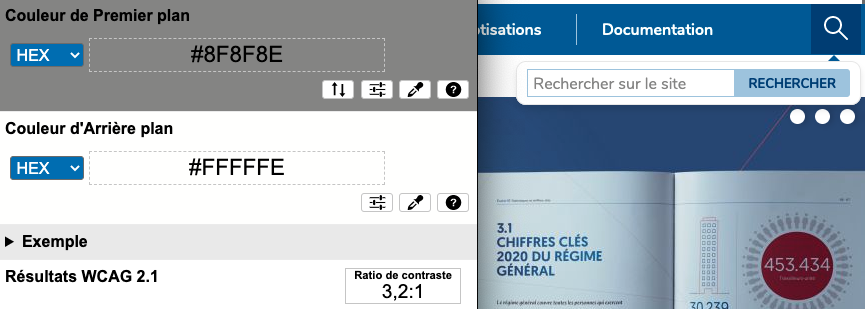
Contraste des composants d'interface
Les composants d'interface, les illustrations porteuses d'information ou encore les mises en couleurs porteuses d'information doivent être suffisamment contrastés pour être perçus par les utilisateurs ayant des troubles de perception des couleurs. Par exemple, une icône porteuse d'information devra avoir un rapport de contraste avec la couleur de fond de 3. De même, pour un champ de saisie de formulaire, dont la zone active est matérialisée par sa bordure, alors la couleur de cette bordure devra avoir un rapport de contraste de 3 avec la couleur de fond de la page.
Constats sur le site
-
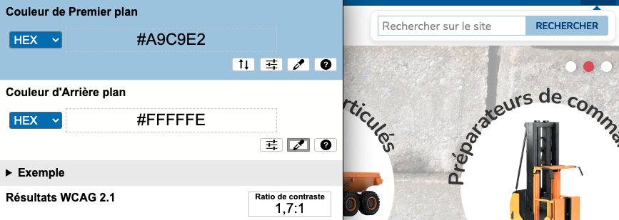
La bordure du champ de recherche, en bleu clair sur blanc, a un contraste de 1.7 au lieu de 3.
Information par la couleur
Lorsqu'une information est donnée par la couleur, il faut qu'elle soit également véhiculée par une autre méthode, par exemple par un texte qui donne la même information, pour être perçue par les utilisateurs aveugles.
Il faut également donner un indice visuel autre que la couleur, afin de répondre aux besoins des personnes déficientes visuelles (les daltoniens par exemple). Il peut s'agir d'un symbole, d'une texture, de chiffres.
Constats sur le site
Dans le pied de page, sur la page contact, le lien « contact » indique par la couleur qu'il s'agit de la page courante. Cet état est restitué aux technologies d'assistance par la propriété aria-current. Cependant il manque également une indication par la forme pour les utilisateurs malvoyants (exemple : un souligné ou un changement de graisse).
Multimédia
Recommandation
Donner si nécessaire à chaque média temporel une transcription textuelle, des sous-titres synchronisés et une audiodescription synchronisée pertinents. Donner à chaque média non temporel une alternative textuelle pertinente. Rendre possible le contrôle de la consultation de chaque média temporel et non temporel au clavier et s'assurer de leur compatibilité avec les technologies d'assistance.
Transcription textuelle
Les vidéos présentes sur le site ne disposent pas de transcription textuelle. Il s'agit d'un impact majeur d'accessibilité. En effet, la transcription textuelle est utile pour différents types d'utilisateurs (aveugles, malvoyants, sourds, malentendants, handicapés moteurs, handicapés cognitifs).
Cette transcription doit être un fichier structuré (docx, HTML) qui reprend toutes les informations présentes (visuelles et sonores) dans la vidéo.
Cette transcription peut être située :
- soit sur la même page que la vidéo ;
- soit ailleurs sur le site. Dans ce cas, ajouter alors un lien vers la transcription sous la vidéo par exemple.
Constats sur le site
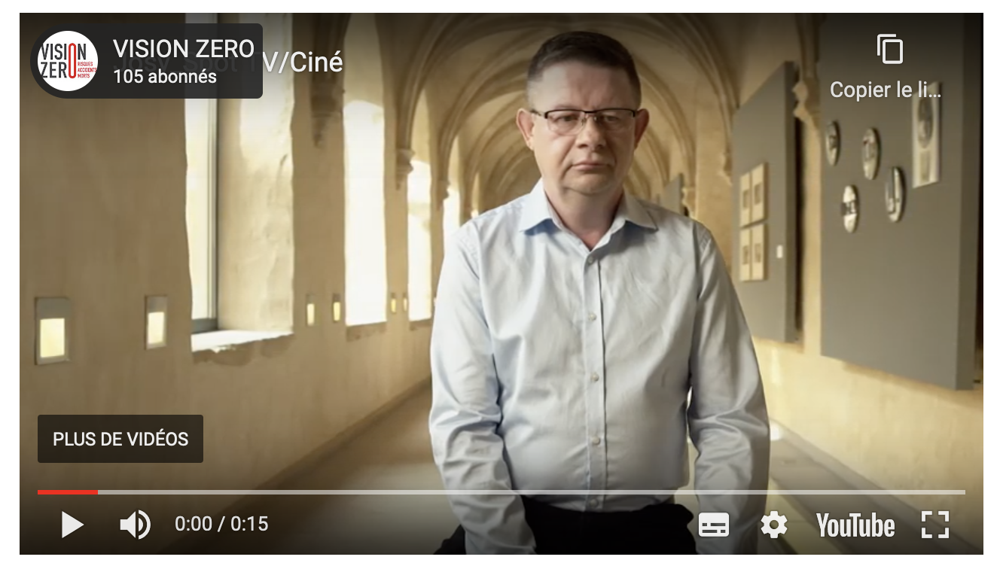Sur la page « Vidéo Josy - victime d'un AT », les vidéos n'ont pas de transcriptions.
Sous-titres
Chaque vidéo doit disposer de sous-titres synchronisés pertinents, pour permettre aux utilisateurs sourds ou malentendants d'accéder au contenu oralisé de la vidéo.
L'utilisateur doit pouvoir activer ou désactiver les sous-titres depuis le lecteur vidéo. Si ce n'est pas possible, une solution consiste à fournir deux versions de la même vidéo : une version sans sous-titres et une version sous-titrée (On fera ensuite un lien réciproque de l'une vers l'autre).
Constats sur le site
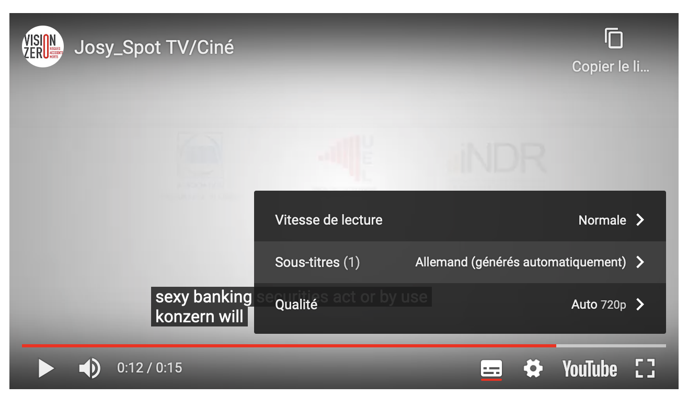Sur la page « Vidéo Josy - victime d'un AT », la vidéo « spot cinéma » n'a pas de sous-titres (les sous-titres automatiques ne sont pas pris en compte).
Tableaux
Recommandation :
Donner un résumé à chaque tableau de données complexe, s'assurer que pour chaque tableau de données ayant un titre, ce titre est pertinent, identifier clairement les cellules d'en-tête, utiliser un mécanisme pertinent pour lier les cellules de données aux cellules d'en-tête. Pour chaque tableau de mise en forme, veiller à sa bonne linéarisation.
Tableaux de données
Un tableau de données doit répondre à certains enjeux pour être exploité correctement par les lecteurs d'écran. Les enjeux sont les suivants :
- Le tableau doit posséder un titre permettant de l'identifier (
<caption>) ; - Les en-têtes doivent être identifiés (balises
<th>) et doivent pouvoir être restitués lorsque l'utilisateur parcourt chaque cellule à l'aide de son lecteur d'écran (attributsscopesi nécessaire).
Constats sur le site
-
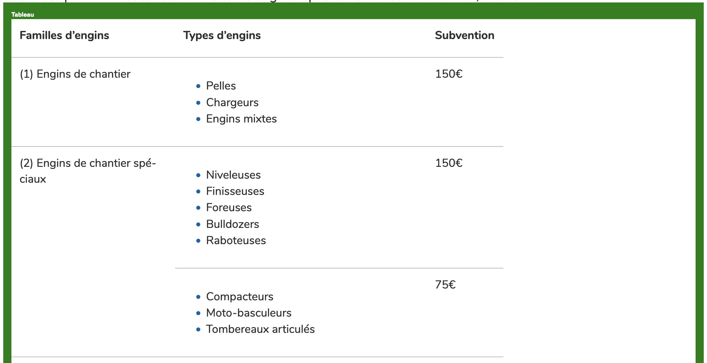
Sur la page formation, le tableau « Subvention des formations de conduite en sécurité d'engins » n'a pas de titre.
-
Sur la page formation, dans le tableau « Subvention des formations de conduite en sécurité d'engins », les en-têtes de colonne « Familles d'engins », « Types d'engins », et « subvention » et les en-têtes de lignes tels que « (1) Engins de chantier », ne sont pas intégrés dans des balises
<th scope="[col/row]">. -
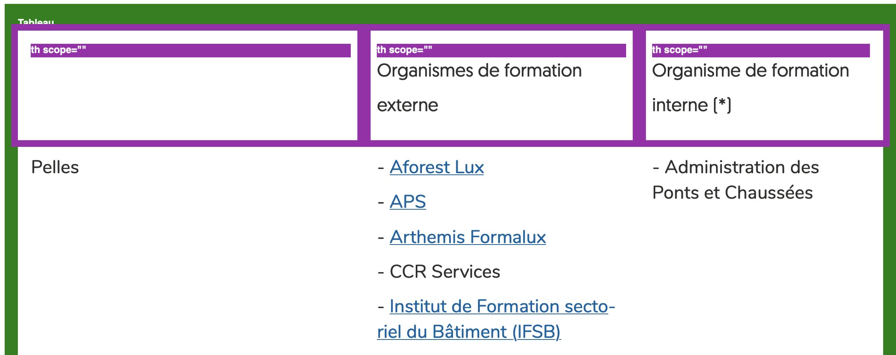
Sur la page formation, dans le tableau des engins de chantier, les en-têtes « Organismes de formation externe » et « Organisme de formation interne (*) » n'ont pas d'attribut
scope.
Liens
Recommandation :
Donner des intitulés de lien explicites, grâce à des informations de contexte notamment, utiliser le titre de lien le moins possible. S'assurer que le nom visible est contenu dans le nom accessible.
Présence d'intitulés
Un lien doit toujours posséder un intitulé permettant à l'utilisateur de comprendre sa destination. Les liens contenant uniquement des objets graphiques (images, icônes, etc.) posent souvent problème pour les personnes aveugles.
Pour ces liens, la technique pour fournir un intitulé dépend des cas :
- Si ces liens-images sont construits avec des balises images (
<img />), renseignez l'alternative de l'image (par exemple :<a href="https://twitter.com/example"><img src="path/to/img/png"alt="Suivez-nous sur Twitter" /></a>) - Si ces liens-images sont construits avec des balises SVG (
<svg>), alors ajoutez sur cette balise unrole="img"pour indiquer aux lecteurs d'écran qu'il s'agit bien d'une image et un intitulé pararia-label="Suivez-nous sur Twitter".
Constats sur le site
-
Les liens « Restez connecté » n'ont pas d'intitulé (l'image
<svg>n'a pas de titre et le texte du lien est masqué par une règleCSSdisplay:none).
Scripts
Recommandation :
Donner si nécessaire à chaque script une alternative pertinente. Rendre possible le contrôle de chaque code script au moins par le clavier et la souris et s'assurer de leur compatibilité avec les technologies d'assistance. Identifier les messages de statut lorsque c'est nécessaire.
Gestion de la visibilité de zones
Le site possède des fonctionnalités d'affichage ou de masquage des zones de contenus. L'état affiché/masqué du contenu additionnel doit pouvoir être disponible pour les technologies d'assistance afin que les utilisateurs aveugles accèdent à cet état.
Pour ce type d’élément, l’implémentation du motif ARIA Disclosure est recommandée.
Constats sur le site
-
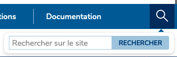
Dans l'en-tête principal du site, le composant « loupe » qui déclenche l'ouverture du moteur de recherche ne respecte pas le motif de conception ARIA Disclosure (l'élément déclencheur n'implémente pas le motif de conception ARIA Button et la propriété
aria-expendedn'est pas actualisée). -
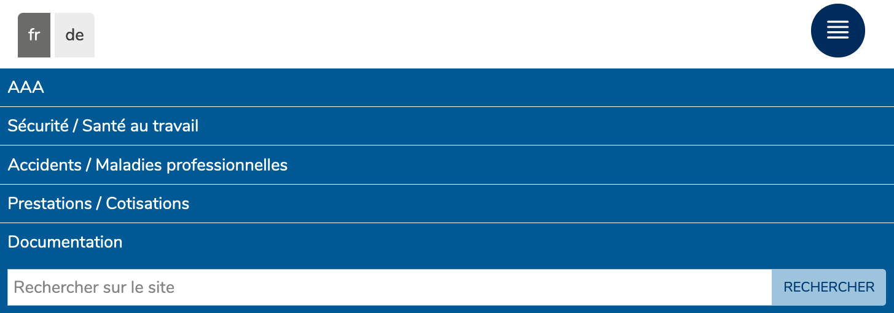
Dans l'en-tête principal du site, le composant « burger » qui déclenche l'ouverture de la navigation responsive ne respecte pas le motif de conception ARIA Disclosure (l'élément déclencheur n'implémente pas le motif de conception ARIA Button et la propriété
aria-expendedn'est pas actualisée).
Éléments obligatoires
Recommandation
Vérifier que chaque page web a un code valide selon le type de document, un titre pertinent et une indication de langue par défaut. Vérifier que les balises ne sont pas utilisées uniquement à des fins de présentation, que les changements de langues et de direction de sens de lecture sont indiqués.
Validité du code
Les technologies d'assistance, comme les lecteurs d'écran ou les systèmes de contrôle à la voix, s'appuient sur le code des pages pour générer les restitutions et les interactions avec l'utilisateur. Un lecteur d'écran va exploiter le code HTML fourni par le navigateur et les informations accessibles au moyen des API d'accessibilité du système.
Si le code comporte des erreurs (balises mal fermées par exemple), il y a un risque que les fonctionnalités du lecteur d'écran soient impactées, comme la navigation de lien en lien par exemple.
Pour vérifier la conformité d'une page, vous pouvez utiliser le validateur mis à disposition par le W3C.
Constats sur le site
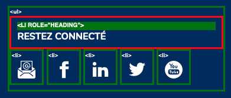Dans le pied de page du site, le titre « Restez connecté » est intégré dans une balise <li> avec un attribut role="heading" ce qui n'est pas permis dans une liste <ul>.
Balises utilisées à des fins de présentation
Les éléments de structure HTML ont chacun une sémantique particulière (paragraphe, titre, image, lien, etc.). Si les éléments sont mal employés (détournés de leur utilité première), cela peut poser des problèmes aux utilisateurs qui naviguent à l'aide d'une technologie d'assistance (lecteur d'écran, plug-in…). En effet, les technologies d'assistance disposent de raccourcis permettant de naviguer rapidement entre certains types d'éléments (paragraphes, titres, listes, etc.). Si ces éléments sont mal employés, les utilisateurs ne peuvent pas utiliser ces fonctionnalités de repère et de navigation dans le contenu.
Constats sur le site
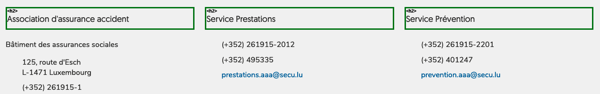Le texte « Bâtiment des assurances sociales 124, route d'Esch L-1471 Luxembourg (+352) 261915-1 » n'est structuré qu'avec des balises <div>
Structuration de l'information
Recommandation
Utiliser des titres, des listes, des abréviations et des citations pour structurer l'information. S'assurer que la structure du document est cohérente.
Structure du document
L'utilisation correcte des balises HTML5 et des landmarks ARIA va permettre d'enrichir la restitution pour les utilisateurs aveugles qui ne perçoivent pas les mises en forme : la navigation principale ne sera plus perçue simplement comme une liste de liens, elle sera restituée à l'utilisateur comme un élément de navigation, par l'intermédiaire du lecteur d'écran qui annoncera « région » ou « repère ».
De plus, ces marqueurs sémantiques vont également constituer des éléments de navigation rapide dans la page. Grâce à un raccourci clavier, certains utilisateurs vont pouvoir naviguer plus rapidement entre les régions qui auront été ainsi identifiées.
Constats sur le site
-
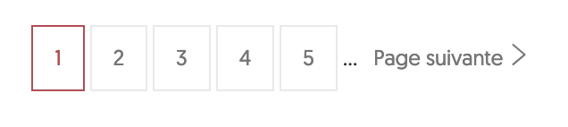
Sur la page des résultats de recherche, la pagination doit être intégrée dans une balise
<nav role="navigation" aria-label="pagination">.
Présentation de l'information
Recommandation
Utiliser des feuilles de styles pour contrôler la présentation de l'information. Vérifier l'effet de l'agrandissement des tailles des caractères sur la lisibilité. S'assurer que les liens sont correctement identifiables, que la prise de focus est signalée, que l'interlignage est suffisant et donner la possibilité à l'utilisateur de contrôler la justification des textes. S'assurer que les textes cachés sont correctement restitués et que l'information n'est pas donnée uniquement par la forme ou la position d'un élément. S'assurer que les contenus sont lisibles et utilisables dans une fenêtre de largeur réduite. Veiller à ce que l'application de paramètres typographiques n'entraîne pas la perte de contenu ou de fonctionnalité. S'assurer que les contenus qui apparaissent au survol et à la prise de focus puissent être contrôlés par l'utilisateur.
Utilisation de CSS exclusivement
Certains utilisateurs qui présentent des troubles de la lecture (personnes dyslexiques par exemple), vont avoir besoin d'adapter la présentation des pages avec leurs propres mises en forme. Cela est possible sans difficulté si le site web utilise exclusivement les feuilles de styles CSS pour réaliser les mises en forme. Cependant, l'utilisation d'attributs et balises HTML de mise en forme rend ces adaptations plus compliquées, sinon impossibles.
Le RGAA donne la liste des attributs et balises qu'il est interdit d'utiliser.
Constats sur le site
Sur la page formation, les tableaux ont des attributs cellpadding, cellspacing, border sur les balises <table> et width sur les balises <td>
Couleur de police et couleur de fond des textes
De nombreux navigateurs permettent aux utilisateurs de choisir une couleur par défaut pour le texte et le fond, à utiliser sans avoir à modifier tous les styles spécifiés par l'auteur. Cela permet aux utilisateurs de visualiser des pages dont les couleurs n'ont pas été spécifiées par l'auteur dans leur combinaison de couleurs préférée.
Pour cette raison, si l'auteur du site a défini une couleur de police sans spécifier de couleur de fond associée, il est possible que le contraste résultant ne soit plus suffisant pour l'utilisateur.
Constats sur le site
Sur le pied de page principal, les liens « Actualités » et « Agenda » sont en blanc, sans avoir de couleur de fond associée (le fond bleu est généré avec un pseudo élément CSS).
Liens dont la nature n'est pas évidente
Un lien dont la nature n'est pas évidente est un lien qui peut être confondu avec un texte normal lorsqu'il est signalé uniquement par la couleur par certains utilisateurs ne percevant pas ou mal les couleurs.
Les personnes déficientes visuelles peuvent ignorer ces liens puisque ceux-ci ne sont pas visuellement discernables du reste du texte dans lequel ils sont insérés.
Constats sur le site
Sur la page « Vision », les liens des documents téléchargeables ne sont pas distinguables du texte environnant. Exemple : le lien « AAA - Politique Qualité » n'est pas différentiable du texte qui le suit « (Pdf - 644Ko) ».
Visibilité de la prise de focus
Les personnes avec un handicap moteur qui naviguent au clavier peuvent rencontrer des difficultés considérables à utiliser du contenu si elles ne sont pas en mesure de repérer l'indication visuelle du focus et ses déplacements.
Constats sur le site
-

Dans l'en-tête principal, le lien-image du logo « AAA.lu Association d'Assurance Acciden »" n'a pas d'indication visuelle visible de la prise de focus.
-
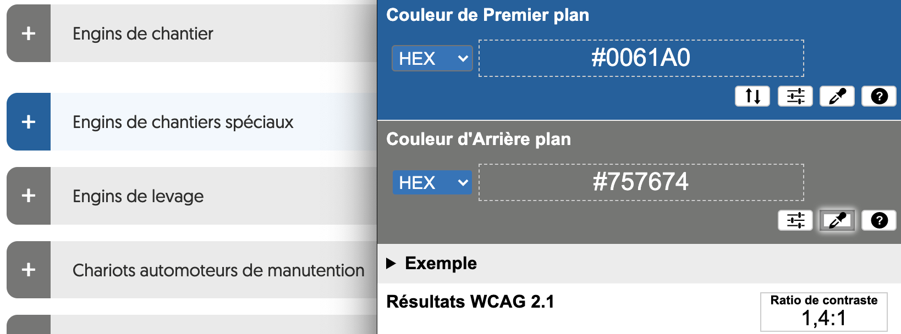
Sur la page formation, l'indication visuelle de prise de focus sur les éléments déclencheurs des panneaux à déplier (exemple « Engins de chantiers spéciaux »), en bleu par rapport au gris de l'état normal, a un contraste de 1.4 au lieu de 3.
Largeur réduite
Il s'agit ici de tester la capacité des contenus à se réorganiser lorsqu'un utilisateur malvoyant doit réaliser un zoom graphique de 400%. À ce titre, on teste la lisibilité des contenus dans une fenêtre de largeur réduite à 320px.
On s'assure que l'utilisateur a accès à tous les contenus et que tous les contenus sont lisibles sans avoir recours à la barre de défilement horizontale.
Constats sur le site

Sur la page formation, le tableau « Engins de chantier » est tronqué.
Formulaires
Recommandation :
Associer pour chaque formulaire chacun de ses champs à son étiquette, grouper les champs dans des blocs d'informations de même nature, regrouper les items de même nature dans les listes de choix, donner à chaque bouton un intitulé explicite. Vérifier la présence d'aide à la saisie, s'assurer que le contrôle de saisie est accessible et que l'utilisateur peut contrôler les données à caractère financier, juridique ou personnel.
Intitulés de bouton pertinents
Les boutons qui permettent d'interagir avec les formulaires doivent avoir des intitulés pertinents pour que l'utilisateur comprenne l'action du bouton.
Ces intitulés sont essentiels pour les personnes aveugles, afin qu'elles soient sûres de l'action qu'elles s'apprêtent à réaliser.
Constats sur le site
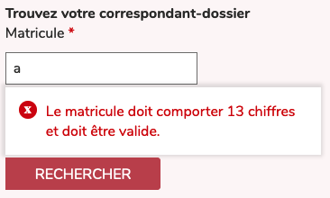Le bouton « Rechercher » du formulaire « Trouvez votre correspondant-dossier » ne précise pas que la recherche se porte uniquement sur ce sujet, contrairement au bouton « Rechercher » du moteur de recherche.
Contrôle de saisie et aide à la saisie
Tous les champs obligatoires doivent être identifiés préalablement à toute validation de l’utilisateur.
Pour les champs qui attendent un format de saisie particulier pour être validés, ce format doit être spécifié à l’utilisateur par un passage de texte visible à proximité du champ. De plus, si l’utilisateur commet une erreur sur ce champ, alors le message d’erreur doit présenter un exemple réel de saisie.
Enfin, les messages d'erreur de saisie des champs de formulaire doivent être liés correctement aux champs en erreur.
Constats sur le site
Dans le formulaire « Trouvez votre correspondant-dossier » :
- le champ « Matricule » n'indique pas le format attendu (8 caractères) ;
- le message d'erreur du champ « Matricule » ne comporte pas d'exemple réel de saisie ;
- le message d'erreur du champ « Matricule » n'est pas relié programmatiquement au champ.
Identification des données attendues
Certains utilisateurs qui ont des troubles d'accès au langage verbal (paralysie cérébrale, aphasie par exemple) auront des difficultés à accéder au sens des termes écrits. Ainsi, pour leur permettre de remplacer les étiquettes présentes dans les formulaires par des étiquettes (verbales ou imagées) qu'ils connaissent, il est nécessaire d'identifier les champs avec un attribut particulier, de sorte qu'une technologie d'assistance pourra réaliser la personnalisation du formulaire nécessaire à l'utilisateur.
L'identification de ces champs permet également aux utilisateurs d'employer des outils pour remplir automatiquement les champs identifiés avec des valeurs de l'utilisateur.
On ne va rechercher que les champs qui attendent une donnée personnelle. Le RGAA demande d'utiliser l'attribut autocomplete et il fournit l'ensemble des valeurs possibles pour l'attribut.
Constats sur le site
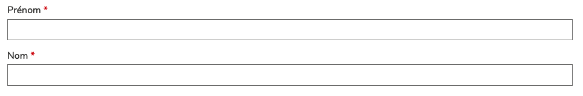Sur la page de contact, les champs « Prénom », « Nom », « Organisation », « Pays », « email », « téléphone » n'ont pas d'attribut autocomplete.
Navigation
Recommandation :
Faciliter la navigation dans un ensemble de pages par au moins deux systèmes de navigation différents (menu de navigation, plan du site ou moteur de recherche), un fil d'Ariane et l'indication de la page active dans le menu de navigation. Identifier les groupes de liens importants et la zone de contenu et donner la possibilité de les éviter par des liens de navigation interne. S'assurer que l'ordre de tabulation est cohérent et que la page ne comporte pas de piège au clavier. S'assurer que les raccourcis clavier qui utilisent une seule touche sont contrôlables par l'utilisateur.
Landmarks ARIA
Pour fournir des points de repère aux utilisateurs aveugles, il faudra également implémenter les landmarks ARIA sur les balises HTML 5 de la page.
Constats sur le site
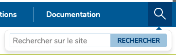Le conteneur du moteur de recherche n'a pas d'attribut role="search".
Consultation
Recommandation
Vérifier que l'utilisateur a le contrôle des procédés de rafraîchissement, des changements brusques de luminosité, des ouvertures de nouvelles fenêtres et des contenus en mouvement ou clignotants. Ne pas faire dépendre l'accomplissement d'une tâche d'une limite de temps sauf si elle est essentielle et s'assurer que les données saisies sont récupérées après une interruption de session authentifiée. Proposer des versions accessibles ou rendre accessibles les documents en téléchargement. S'assurer que la consultation n'est pas dépendante de l'orientation de l'écran. Toujours proposer un geste simple en alternative d'un geste complexe permettant de réaliser une action.
Documents en téléchargement
Assurez-vous que chaque document soit accessible (cf. les Guides de créations de documents bureautiques accessibles), ou qu'il dispose d'une alternative accessible proposant le même contenu (par exemple, une version HTML correctement structurée).
Constats sur le site
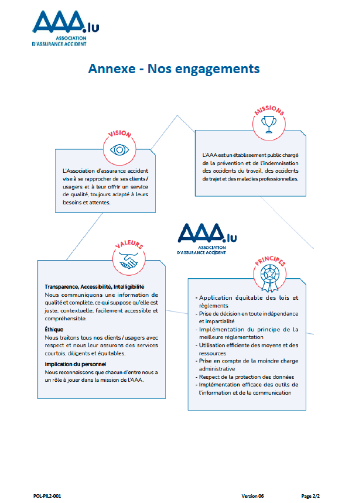Sur la page « vision », le document « politique-qualite-aaa-v6-1.pdf » contient une image complexe sur sa seconde page qui n'a pas d'alternative.